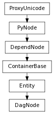

Returns the bounding box for the dag node in object space.
| Return type: | BoundingBox |
|---|
Derived from api method maya.OpenMaya.MFnDagNode.boundingBox
Queries the DAG Node attached to the Function Set for the child Node corresponding to the given index.
| Parameters : |
|
|---|---|
| Return type: | PyNode |
Derived from api method maya.OpenMaya.MFnDagNode.child
Will retrieve a Component object for this node; similar to DependNode.attr(), but for components.
| Return type: | Component |
|---|
unlike the firstParent command which determines the parent via string formatting, this command uses the listRelatives command
The full dag path to the object, including leading pipe ( | )
| Return type: | unicode |
|---|
Return a list of all parents above this.
Starts from the parent immediately above, going up.
| Return type: | DagNode list |
|---|
see also childAtIndex
for flags, see pymel.core.general.listRelatives
| Return type: | DagNode list |
|---|
| Return type: | DagNode list |
|---|
>>> from pymel.core import *
>>> f=newFile(f=1) #start clean
>>>
>>> s = polyPlane()[0]
>>> instance(s)
[nt.Transform(u'pPlane2')]
>>> instance(s)
[nt.Transform(u'pPlane3')]
>>> s.getShape().getInstances()
[nt.Mesh(u'pPlane1|pPlaneShape1'), nt.Mesh(u'pPlane2|pPlaneShape1'), nt.Mesh(u'pPlane3|pPlaneShape1')]
>>> s.getShape().getInstances(includeSelf=False)
[nt.Mesh(u'pPlane2|pPlaneShape1'), nt.Mesh(u'pPlane3|pPlaneShape1')]
Determines the index for the current user defined inactive color used by the node. Valid indices are from 0 to 7.
| Return type: | int |
|---|
Derived from api method maya.OpenMaya.MFnDagNode.objectColor
same as DagNode.getInstances with includeSelf=False.
| Return type: | DagNode list |
|---|
added optional generations flag, which gives the number of levels up that you wish to go for the parent; ie:
>>> from pymel.core import *
>>> select(cl=1)
>>> bottom = group(n='bottom')
>>> group(n='almostThere')
nt.Transform(u'almostThere')
>>> group(n='nextLevel')
nt.Transform(u'nextLevel')
>>> group(n='topLevel')
nt.Transform(u'topLevel')
>>> bottom.longName()
u'|topLevel|nextLevel|almostThere|bottom'
>>> bottom.getParent(2)
nt.Transform(u'nextLevel')
Negative values will traverse from the top:
>>> bottom.getParent(generations=-3)
nt.Transform(u'almostThere')
A value of 0 will return the same node. The default value is 1.
If generations is None, it will be interpreted as ‘return all parents’, and a list will be returned.
Since the original command returned None if there is no parent, to sync with this behavior, None will be returned if generations is out of bounds (no IndexError will be thrown).
| Return type: | DagNode |
|---|
Determines whether or not the given Node is a child of the DAG Node attached to the Function Set.
| Parameters : |
|
|---|---|
| Return type: | bool |
Derived from api method maya.OpenMaya.MFnDagNode.hasChild
Determines whether or not the given Node is a parent of the DAG Node attached to the Function Set.
| Parameters : |
|
|---|---|
| Return type: | bool |
Derived from api method maya.OpenMaya.MFnDagNode.hasParent
Determines whether or not the DAG Node is in the model.
| Return type: | bool |
|---|
Derived from api method maya.OpenMaya.MFnDagNode.inModel
Determines whether or not the DAG Node is an underworld node. (An example of an underworld node is a curve on surface .)
| Return type: | bool |
|---|
Derived from api method maya.OpenMaya.MFnDagNode.inUnderWorld
Determines the number of times the Node attached to the Function Set is instanced.
| Parameters : |
|
|---|---|
| Return type: | int |
Derived from api method maya.OpenMaya.MFnDagNode.instanceCount
returns the instance number that this path represents in the DAG. The instance number can be used to determine which element of the world space array attributes of a DAG node to connect to get information regarding this instance.
| Return type: | int |
|---|
Determines whether or not the DAG Node attached to the Function Set is a child of the given node.
| Parameters : |
|
|---|---|
| Return type: | bool |
Derived from api method maya.OpenMaya.MFnDagNode.isChildOf
Returns whether any of this object’s shading groups have a displacement shader input
| Return type: | bool |
|---|
| Return type: | bool |
|---|
Returns true if the DAG node can be instanced, and false otherwise.
| Return type: | bool |
|---|
Derived from api method maya.OpenMaya.MFnDagNode.isInstanceable
Determines whether the DAG Node attached to the Function Set is directly or indirectly instanced.
| Parameters : |
|
|---|---|
| Return type: | bool |
Derived from api method maya.OpenMaya.MFnDagNode.isInstanced
Returns true if this object is an intermediate in a geometry calculation.
| Return type: | bool |
|---|
Derived from api method maya.OpenMaya.MFnDagNode.isIntermediateObject
Determines whether or not the DAG Node attached to the Function Set is a parent of the given node.
| Parameters : |
|
|---|---|
| Return type: | bool |
Derived from api method maya.OpenMaya.MFnDagNode.isParentOf
Determines whether or not the user defined inactive color will be used for the node, or whether the default inactive color will be used.
| Return type: | bool |
|---|
Derived from api method maya.OpenMaya.MFnDagNode.usingObjectColor
for flags, see pymel.core.general.listRelatives
| Return type: | PyNode list |
|---|
The full dag path to the object, including leading pipe ( | )
| Return type: | unicode |
|---|
Just the name of the node, without any dag path
| Return type: | unicode |
|---|
Determines the number of child Nodes of the Node. Used to determine the upper bound for the child index (max index = childCount-1).
| Return type: | int |
|---|
Derived from api method maya.OpenMaya.MFnDagNode.childCount
Queries the DAG Node attached to the Function Set for the parent Node corresponding to the given index.
| Parameters : |
|
|---|---|
| Return type: | PyNode |
Derived from api method maya.OpenMaya.MFnDagNode.parent
Determines the number of parent Nodes of the Node. Used to determine the upper bound for the parent index (max index = parentCount-1).
| Return type: | int |
|---|
Derived from api method maya.OpenMaya.MFnDagNode.parentCount
rootOf
| Return type: | unicode |
|---|
Sets whether this object is an intermediate in a geometry calculation.
| Parameters : |
|
|---|
Derived from api method maya.OpenMaya.MFnDagNode.setIntermediateObject
This command sets the dormant wireframe color of the specified objects to an integer representing one of the user defined colors, or, if set to None, to the default class color
parent
Sets whether or not the user defined inactive object color will be used.
| Parameters : |
|
|---|
Derived from api method maya.OpenMaya.MFnDagNode.setUseObjectColor
Undo is not currently supported for this method
The shortest unique name.
| Return type: | unicode |
|---|
Returns the object space transformation matrix for this DAG node. In general, only transform nodes have matrices associated with them. Nodes such as shapes (geometry nodes) do not have transform matrices.
| Return type: | Matrix |
|---|
Derived from api method maya.OpenMaya.MFnDagNode.transformationMatrix